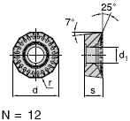
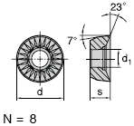
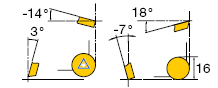
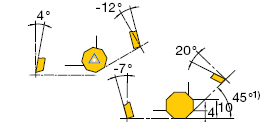

C. Selim Yýldýrým
Ar-Ge Müh.
Fardizayn Tasarým Teknopark Tic. Ltd. Þti.
Gebze / Kocaeli
Kasým 2007
Özet:
Kesici takým geometrisinde modern tasarýmlar günümüz teknolojisiyle çok farklý boyutlara ulaþmýþtýr. Tasarýmlar temel ihtiyaca göre yapýldýðýndan dolayý, kesici uç geometrileri devamlý deðiþiklik göstermiþtir.
Bu çalýþmalar kesici uç üreten firmalarýn Ar-Ge bölümlerinde farklý kesme deðerlerinde farklý malzemelerde uygulanarak, yeni tasarýmlarýn daha saðlýklý bir þekilde ortaya çýkarýlmasýna olanak tanýr.
Bu çalýþmada kesici uç geometrisindeki temel kriterler, modern tasarýmlar, talaþ kýrýcýlar ve mikro geometrilerin sektördeki rolü ve önemi detaylý bir þekilde incelenmiþtir.
1. Giriþ:
Günümüz 21. yy. küresel pazar ekonomik yapýsýnda, rekabet gücü üreticilerin yaþamlarýný sürdürebilmeleri için çok önemli bir güç haline gelmiþtir. Rekabet gücünün elinde bulunduran üreticiler, müþterilerin isteklerini mümkün olan en kýsa süre içerisinde karþýlýya bildikleri sürece, rekabette sürekli baþarýlý olabilirler. 21. yy. üreticileri yüksek kaliteli, düþük maliyetli ve daha iþlevsel ürünler üretmek zorunluluðundadýrlar. Çünkü bugün ki pazar; müþterinin istediði ürünü kýsa zamanda ve düþük maliyette eline geçirebileceði bir pazardýr. Buda kýsa ürün geliþtirme zamanýný zorunlu kýldýðýndan, yüksek kaliteli ürünlerin müþterinin istediði özellikler doðrultusunda, çok kýsa süre içerisinde pazara sunulmasý, üretici kuruluþlar için hayati önem taþýmaktadýr.
Bu modern tasarýmlar la birlikte takým geometrisinde çok ileri boyutlara gelinmiþ olup, talaþ kaldýrma iþleminin her aþamasýna göre farklý yapýda kesici uçlar geliþtirilmiþtir. Bununla birlikte kesici ucun malzemesi de takým geometrisi kadar önem arz etmiþ olup bu yönde yapýlan Ar-Ge çalýþmalarý temel kriterler içinde deðerlendirilmiþtir.
2. Kesici takýmlar
Kesici takým malzemesini etkileyen faktörler þunlardýr:
- Ýþ parçasýnýn karakteristikleri
- Parça karakteristikleri( geometri, yüzey bitirme, boyutsal hassasiyet ve yüzey bütünlülüðü)
- Takým tezgahý ve tutucusunun karakteristikleri
Yüksek bölgesel gerilimler ise takýmýn aþaðýdaki özelliklere sahip olmasýný gerektirir:
- Yüksek sertlik
- Aþýnmaya ve kesici kenarýn talaþlanmaya karþý direnci yüksek olmalýdýr
- Yüksek tokluk
- Yüksek sýcak sertlik
- Yüksek elastik modül
- Doðru geometri ve yüzey kalitesi [3]
3. Kesici takým geometrisinde talaþlý iþlenebilirliðin etkisi
Talaþlý iþlenebilirlik proses ve malzemeyi birlikte ihtiva eden bir sistem özelliði olarak düþünülmelidir. Malzemeleri iþlenebilirlik açýsýndan genel bir sýralamaya koymak mümkün deðildir. Bununla beraber geleneksel olarak iþlenebilirliðin bir malzeme özelliði olduðu söylenebilir. Malzemelerin talaþlý iþlem kabiliyetini belirlemede kantitatif deðerlendirme kriterlerinin kullanýlmasý gerekir. Bu kriterler aþaðýda detaylý olarak izah edilmiþtir:
- Sýk sýk adýndan söz edilen talaþlý iþlenebilirlik indeksi, referans bir malzemeye göre malzemelerin ortalama iþlenebilme hýzý sýralamasýný ifade etmektedir.
- Dakika ve saniye cinsinden verilen bir takým ömrü için kesme hýzý deðeri veya verilen bir takým ömrü kriteri için iþlenen metalin hacmi malzemelerin talaþlý iþlenebilirlik kabiliyetinin tespitinde kullanýlacak daha kantitatif ölçülerdir [3].
- Diðer bir kriter takým aþýnmasýdýr. Bu deðer verilen bir kesme hýzý ve besleme deðerinde kalem boyutunda birim zamanda aþýnmadan dolayý meydana gelen deðiþim cinsinden veya standart bir taban yüzeyi aþýnmasýnýn oluþabilmesi için gerekli olan zaman olarak verilir.
- Diðer bir kantitatif ölçü ise standart kesme ve besleme hýzlarýnda elde edilen yüzey bitirme kalitesidir.
Talaþlý iþlenebilirlik çok yönlü özelliktir ve malzemelerin bir kýsým özellikleri tarafýndan etkilenir. Ýyi iþlenebilirlik terimi minimum takým aþýnmasý iyi yüzey bitirme gibi kriterlerden birini veya birden fazlasýný ifade eder.
Ýyi iþlenebilirlik için aþaðýdaki özellikler aranýr;
Talaþýn kolaylýkla kýrýlabilmesi ve küçük oranlardaki kaymadan sonra talaþýn ayrýlabilmesi için sünekliliðin düþük olmasý gerekir. Bu karakteristikler plastik deformasyonda istenenlerin tam tersidir. Bu yüzen tercih edilen özellikler arasýnda düþük bir deformasyon üssü, düþük kavitasyon oluþturma direnci, düþük kesit ve düþük kýrýlma direnci bulunmaktadýr [3].
Ýyi iþlenebilirlik takým geometrisinde ki temel kriterlere baðlý olmakla birlikte, bu kriterlerin dýþýnda, soðutma sývýsý, malzemenin cinsi, tutucunun rijitliði, kesme ve ilerleme hýzý v.b. gibi diðer kriterlerde dikkate alýnmasý gereklidir.
4. Kesici takým geometrisinde modern tasarýmlar
Model ve kalýpçýlýk sektöründe yaþanan hýzlý geliþmeler takým ve uçlardaki beklenti ve ihtiyaçlarý arttýrmaktadýr. Yüksek kesme hýzlarý ile çalýþabilmek ve daha hassas kalýp iþleyebilmek için yeni tezgah arayýþlarýna girildiði gibi bu tezgahlarda daha performanslý çalýþabilecek takým ve uçlar da araþtýrýlmýþtýr.
4.1 Talaþ Kýrýcýlý Geometriler:
Kesici takým seçiminde temel kriterler arasýnda en önemli yere sahip olanlar yüksek ilerleme takýmlarýdýr. Çünkü artýk sanayici "Bir iþi en kýsa zamanda en iyi kalitede nasýl yapabilirim?" bu þekilde takým seçmektedir. Burada kullanýlacak uç çok önemlidir. Özellikle kaba operasyonlarda daha çok tercih edilmektedir [1].
Takýmlarýn sahip olduklarý geometriler deneysel veriler sonucu ispatlanmýþtýr.
Bu geometriye sahip uçlar daha çok ýsýdan kaynaklanan problemleri minimize etmek için tasarlanmýþtýr. Talaþ kýrýcýda ki diðer bir kasýt ise talaþ oluþumu sýrasýnda talaþýn takýma yapýþmasýný önlemektir. Diðer bir ifadeyle talaþýn tane tane daðýlmasýdýr yani bir yerden kopmasýdýr. Çünkü yüksek ilerleme de ve düþük hýzlarda iþleme yapýldýðýndan imalat esnasýnda ortaya çok yüksek deðerlerde ýsý meydana geldiðinden dolayý bu ýsýnýn talaþla bir þekilde atýlmasý gerekmektedir. Bu çentikler takým üzerine gelen ýsýyý daðýtmakla beraber ayný zamanda talaþý sürekli bir yerden kopararak ( kýrarak) yýðýntý kenar oluþumunu da önlemiþ olurlar.

Þekil 4.1 Çeþitli Yapýdaki Talaþ Kýrýcý Geometrileri

Þekil 4.2 Talaþ Kýrýcýlý Uçlar
Ayrýca bu tipteki uçlar tezgahtan %30 daha az güç çekebilme özelliðine ve düþük hýzlarda çok iyi frezeleme özelliðine sahiptirler.
|